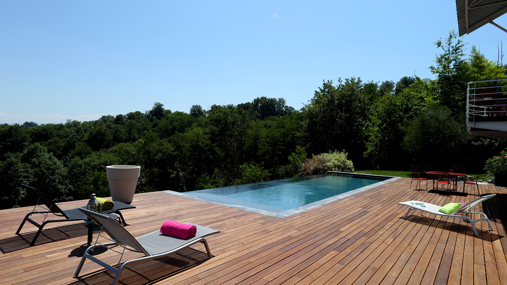
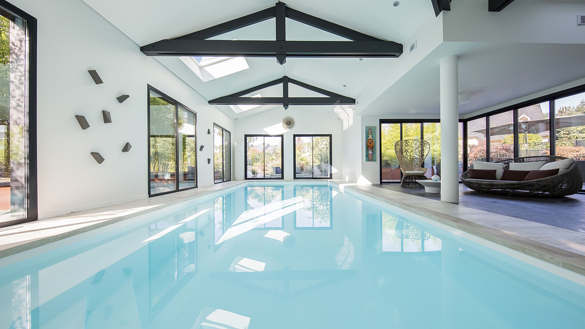
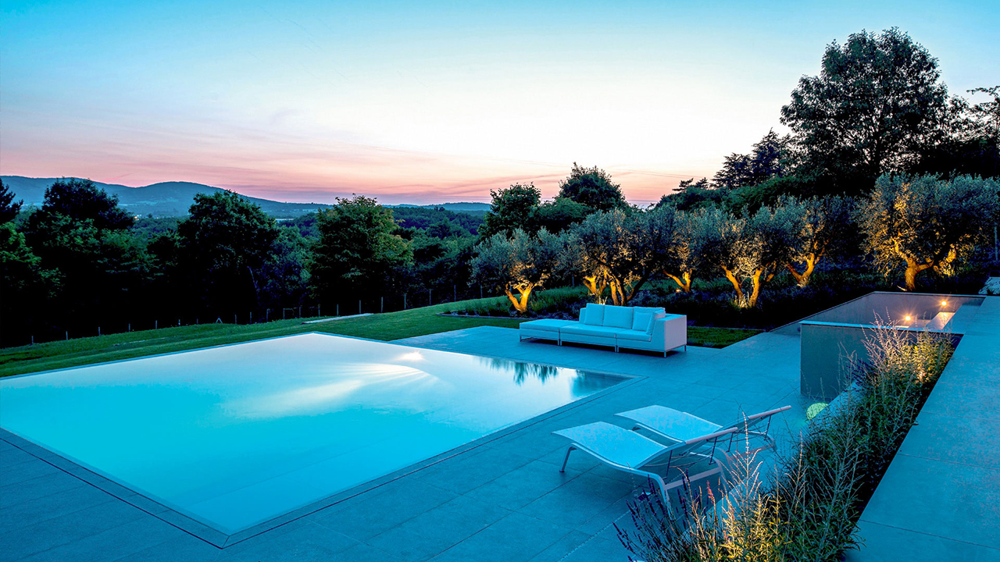
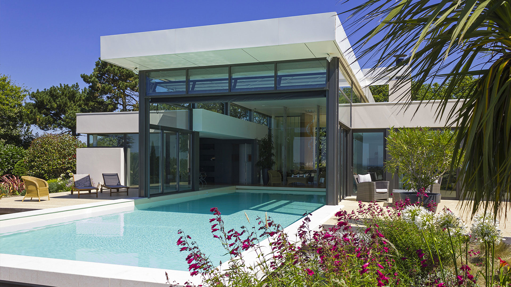
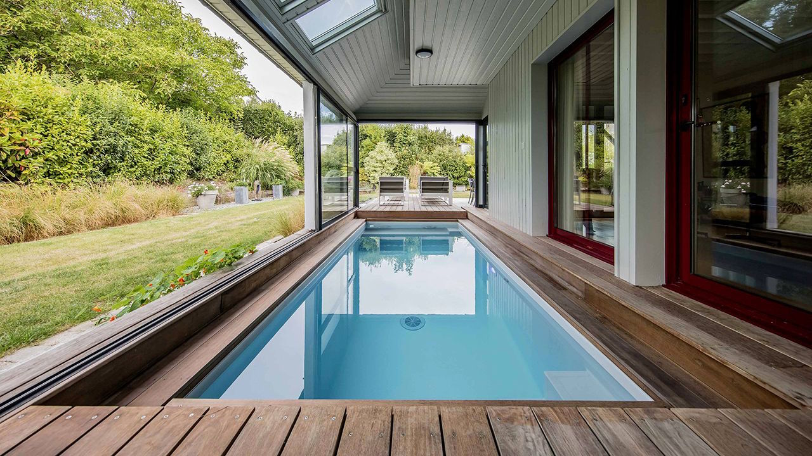
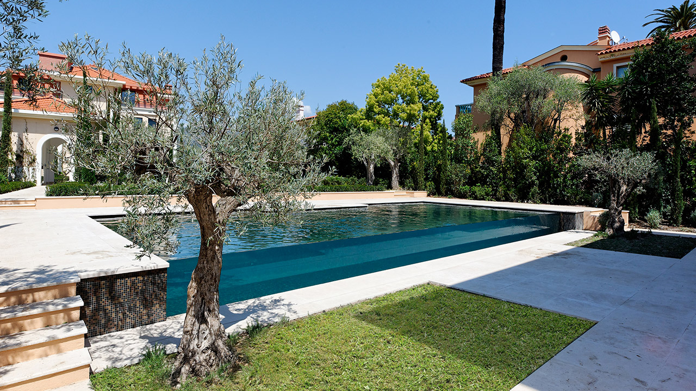

<!DOCTYPE html>
<html>
  <head>
    <meta charset="utf-8">
    <link rel="stylesheet" href="css/style.css">
    <title>Ramos Piscines</title>
  </head>
  <body>

    <!-- header -->

    <header>

      <aside>
        <figure>
          
        </figure>
      </aside>

      <section>
      <h1>Piscine, concepts, tout a votre dispositions… </h1>
      </section>

    </header>

    <section class="home">

      <aside>

        <nav>
          <ul>
            <li><a href="index.html">Home</a></li>
            <li><a href="piscines.html"><span id="act">Piscines</span></a></li>
            <li><a href="tarifs.html">Tarifs</a></li>
            <li><a href="contact.html"><span class="cont">Prenons contact</span></a></li>
          </ul>
        </nav>

      </aside>

      <section class="piscine">

        <h2><span>Piscines</span></h2>
        <h3 id="deb">Le piscine à débordement</h3>
        <p>Les piscines à débordement Esthétique et adaptable à tous les terrains, la technique de la piscine à débordement est l'atout charme des plus belles piscines, apportant ainsi une réelle plus-value à votre bassin. L'eau, débordant d’un ou plusieurs côtés, offre alors un niveau de finition exceptionnel. Un grand choix de revêtements, parmi lesquels pierre naturelle et céramique, vous permettra de personnaliser votre piscine à débordement.</p>

        <article class="coute">
            <h4>De l’eau à perte</h4>
            <p >Piscine 12,5 x 4 m <br>
              Revêtement gris anthracite <br>
              Escalier droit sur la largeur <br>
              Margelles en ardoise <br>
              Plage en ipé <br></p>
              <p><span>12 800<sup>€</sup></span></p>
              <p><a href="tarifs.html">Voir les tableau de prix</a></p>
        </article>

        <figure>
          
        </figure>

        <h3 id="int">Le piscine intérieures</h3>
        <p>Intégrée à la maison, installée dans un bâtiment dédié ou sous un abris adossé, la piscine intérieure permet de se baigner quelque soit la saison et les conditions climatiques. Un soin tout particulier est apporté au choix des matériaux, au traitement de l'air et de l'eau, à la déshumidification, afin de vous plonger dans un confort absolu et vous garantir un ouvrage pérenne. Nager, se détendre, se relaxer devient un plaisir quotidien, pratiqué tout au long de l'année.</p>

        <figure>
          
        </figure>

        <article class="coute">
            <h4>Salon de l’eau</h4>
            <p>Piscine 9 x 4 m <br>
              Escalier d’angle et banquette <br>
              Margelles en carrelage</p>
              <p><span>13 900<sup>€</sup></span></p>
              <p><a href="tarifs.html">Voir les tableau de prix</a></p>
        </article>

        <h3 id="mir">Le piscine miroir</h3>
        <p>Les piscines miroir Leurs lignes épurées créent une atmosphère élégante et raffinée où l'eau affleure au niveau de la plage. L'effet "miroir" magnifie le lieu, jouant ainsi avec les reflets du ciel, de la lumière, du soleil et de la végétation environnante.</p>
        <article class="coute">
            <h4>Pépite dans la colline</h4>
            <p>Piscine 8 x 7 m <br>
              Revêtement gris clair <br>
              Escalier droit sur la largeur <br>
              Margelles et plage <br></p>
              <p><span>11 600<sup>€</sup></span></p>
              <p><a href="tarifs.html">Voir les tableau de prix</a></p>
        </article>

        <figure>
          
        </figure>

        <h3 id="in">Le piscine In & Out</h3>
        <p>Elle se transforme, selon la saison, en piscine extérieure ou en piscine intérieure. A la saison froide, une cloison immergée peut scinder le bassin en deux parties, chacune équipée d'un système de filtration indépendant. La piscine intérieure continue ainsi à fonctionner et à être chauffée pendant que l'extérieur est hiverné. Un concentré de savoir-faire pour une piscine d'exception.</p>
        <figure>
          
        </figure>

        <article class="coute">
            <h4>Piscine quatre saisons</h4>
            <p>Piscine 16 x 6 m <br>
              Revêtement sable <br>
              Escalier d’angle intérieur</p>
              <p><span>14 000<sup>€</sup></span></p>
              <p><a href="tarifs.html">Voir les tableau de prix</a></p>
        </article>

        <h3 id="mini">Le Mini-pool</h3>
        <p>Conçue pour les petits espaces, la Mini pool vous permet de bénéficier de tous les plaisirs de la baignade, tout en conservant les précieux mètres carrés de votre terrasse ou de votre jardin. La Mini pool, c’est une piscine pour les petits espaces que l’on veut conserver. Equipée d’un fond mobile, la Mini pool est disponible en 3 dimensions : 5 x 2m, 4 x 2,50m et 3 x 3m. Avec son plan d’eau inférieur à 10m2, elle ne nécessite ni permis de construire ni déclaration préalable</p>
        <article class="coute">
            <h4>Espace précieux</h4>
            <p>Piscine 4,50 x 2,20 m <br>
              Revêtement gris clair</p>
              <p><span>10 300<sup>€</sup></span></p>
              <p><a href="tarifs.html">Voir les tableau de prix</a></p>
        </article>

        <figure>
          
        </figure>

        <h3 id="vit">Le piscine à paroi vitrée</h3>
        <p>Une piscine à débordement sur paroi transparente.</p>
        <figure>
          
        </figure>

        <article class="coute">
            <h4>Design sans concession</h4>
            <p>Piscine 15 x 6,8 m <br>
              Mosaique personnalisée <br>
              Camaïeu de noir et marron</p>
              <p><span>15 500<sup>€</sup></span></p>
              <p><a href="tarifs.html">Voir les tableau de prix</a></p>
        </article>

        <footer>
          <p>Yuran Ramos, Copyright &copy; 2017</p>
        </footer>

      </section>

    </section>

  </body>
</html>
